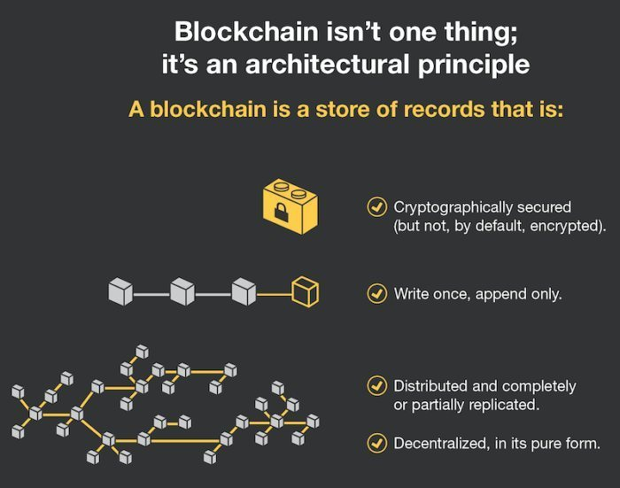
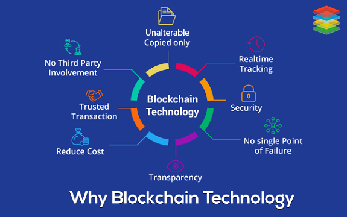

Introduction to Blockchain

Over the past few years, you have consistently heard the term ‘Blockchain technology,’ probably regarding cryptocurrencies like Bitcoin. It seems like Blockchain is a platitude but in a hypothetical sense, as there is no real meaning that the layman can understand easily. It is imperative to learn Blockchain technology, how it works, and how it’s becoming vital in the digital world. According to Global Data’s Thematic research report, the demand for cryptocurrencies has receded by 20% during 2018 when compared to the previous years. The reason being businesses are preferring to deploy traditional approaches for their earlier stage projects rather than going with Blockchain technology.
People have higher expectations on Blockchain technology based on weaker perceptions based on the report findings, and, in a couple of years, the truth about the Blockchain will be demystified. Blockchain technology has real value, and, over time, the scope of it will become wider and more user-friendly. So, the onus is on you to learn Blockchain technology to prepare for the future. If you are new to Blockchain technology, then this is the right platform to gain a solid foundational knowledge. In this article, you will learn the basics of Blockchain technology, how it works, why it’s important, and how you can use this field to advance your career.
What is Blockchain Technology?

Blockchain Technology is a structure that stores transactional records, also known as the block, of the public in several databases, known as the “chain,” in a network connected through peer-to-peer nodes. Typically, this storage is referred to as a ‘digital ledger.’ Every transaction in this ledger is authorized by the digital signature of the owner, which authenticates the transaction and safeguards it from tampering. Hence, the information the digital ledger contains is highly secure. In simpler words, the digital ledger is like a Google spreadsheet shared among numerous computers in a network, in which, the transactional records are stored based on actual purchases. The fascinating angle is that anybody can see the data, but they can’t corrupt it.
Why is Blockchain Popular?

Suppose you are transferring money to your family or friends from your bank account. You would log in to online banking and transfer the amount to the other person using their account number. When the transaction is done, your bank updates the transaction records. It seems simple enough, right? There is a potential issue which most of us neglect. These types of transactions can be tampered with very quickly. People who are familiar with this truth are often wary of using these types of transactions, hence the evolution of third-party payment applications in recent years. But this vulnerability is essentially why Blockchain technology was created. Technologically, Blockchain is a digital ledger that is gaining a lot of attention and traction recently. But why has it become so popular? Well, let’s dig into it to fathom the whole concept. Record keeping of data and transactions are a crucial part of the business. Often, this information is handled in house or passed through a third party like brokers, bankers, or lawyers increasing time, cost, or both on the business. Fortunately, Blockchain avoids this long process and facilitates faster movement of the transaction, thereby saving both time and money. Most people assume Blockchain and Bitcoin can be used interchangeably, but in reality, that’s not the case. Blockchain is the technology capable of supporting various applications related to multiple industries like finance, supply chain, manufacturing, etc., but Bitcoin is a currency that relies on Blockchain technology to be secure. Blockchain is an emerging technology with many advantages in an increasingly digital world:
- Highly Secure
- Blockchain technology uses a digital signature feature to conduct fraud-free transactions making it impossible to corrupt or change the data of an individual by the other users without a specific digital signature.
- Decentralized System
- Conventionally, you need the approval of regulatory authorities like a government or bank for transactions; however, with Blockchain, transactions are done with the mutual consensus of users resulting in smoother, safer, and faster transactions.
- Automation Capability
- Blockchain technology is programmable and can generate systematic actions, events, and payments automatically when the criteria of the trigger are met.
How does Blockchain Technology work?

In recent years, you may have noticed many businesses around the world integrating Blockchain technology. But how exactly does Blockchain technology work? Is this a significant change or a simple addition? The advancements of Blockchain are still young and have the potential to be revolutionary in the future; so, let’s begin demystifying this technology. Blockchain is a combination of three leading technologies:
- Cryptographic keys
- A peer-to-peer network containing a shared ledger
- A means of computing, to store the transactions and records of the network
The process of Transaction
One of Blockchain technology’s cardinal features is the way it confirms and authorizes transactions. For example, if two individuals wish to perform a transaction with a private and public key, respectively, the first person party would attach the transaction information on to the public key of the second party. This total information is gathered together into a block. The block contains a digital signature, a timestamp, and other important, relevant information. It should be noted that the block doesn’t include the identities of the individuals involved in the transaction. This block is then transmitted across all of the network's nodes, and when the right individual uses his private key and matches it with the block, the transaction gets completed successfully. In addition to conducting financial transactions, the Blockchain can also hold transactional details of properties, vehicles, etc. Here’s a use case that illustrates how Blockchain works:
Hash Encryptions
- Blockchain technology uses hash encryption to secure the data, relying mainly on the SHA256 algorithm to secure the information. The address of the sender (public key), the receiver’s address, the transaction, and his/her private key details are transmitted via the SHA256 algorithm. The encrypted information, called hash encryption, is transmitted across the world and added to the Blockchain after verification. The SHA256 algorithm makes it almost impossible to hack the hash encryption, which in turn simplifies the sender and receiver’s authentication.
Proof of Work
- In a Blockchain, each block consists of 4 main headers.
Previous Hash:
This hash address locates the previous block.Transaction Details:
Details of all the transactions that need to occur.Nonce:
An arbitrary number given in cryptography to differentiate the block’s hash address.Hash Address of the Block:
All of the above (i.e., preceding hash, transaction details, and nonce) are transmitted through a hashing algorithm. This gives an output containing a 256-bit, 64 character length value, which is called the unique ‘hash address.’ Consequently, it is referred to as the hash of the block. Numerous people around the world try to figure out the right hash value to meet a predetermined condition using the computational algorithms. The transaction completes when the predetermined condition is met. To put it more plainly, Blockchain miners attempt to solve a mathematical puzzle, which is referred to as a proof of work problem. Whoever solves it first gets a reward. Mining
- In Blockchain technology, the process of adding transactional details to the present digital/public ledger is called ‘mining.’ Though the term is associated with Bitcoin, it is used to refer to other Blockchain technologies as well. Mining involves generating the hash of a block transaction, which is tough to forge, thereby ensuring the safety of the entire Blockchain without needing a central system.
What Are the Implications of Blockchain Technology?
Blockchain technology has made a great impact on society, including:
- Bitcoin, Blockchain’s prime application and the whole reason the technology was developed in the first place, has helped many people through financial services such as digital wallets. It has provided microloans and allowed micropayments to people in less than ideal economic circumstances, thereby introducing new life in the world economy.
- The next major impact is in the concept of TRUST, especially within the sphere of international transactions. Previously, lawyers were hired to bridge the trust gap between two different parties, but it consumed extra time and money. But the introduction of Cryptocurrency has radically changed the trust equation. Many organizations are located in areas where resources are scarce, and corruption is widespread. In such cases, Blockchain renders a significant advantage to these affected people and organizations, allowing them to escape the tricks of unreliable third-party intermediaries.
- In the area of politics, Blockchain is being looked at by an organization called Follow My Vote, which is trying to combat election fraud at the ballot box.
- The advent of the Internet of Things (IoT) has unleashed l a plethora of smart machines that transfer data over the Internet without any human interaction needed. Likewise, technology is even used for public services such as rubbish collection, transportation, and traffic management. So, in the world of IoT, you can make Smart Contracts and allow smart objects to perform the listed tasks, which in turn negates the need for human involvement.
- Blockchain technology can create a decentralized peer-to-peer network for organizations or apps like Airbnb and Uber. It allows people to pay for things like toll fees, parking, etc.
- Blockchain technology can be used as a secure platform for the healthcare industry for the purposes of storing sensitive patient data. Health-related organizations can create a centralized database with Blockchain technology and share the information with only the appropriately authorized people.
- In the private consumer world, Blockchain technology can be employed by two parties who wish to conduct a private transaction. However, these kinds of transactions have details that need to be hammered out before both parties can proceed:
- What is the T&C of the exchange?
- Are all the terms clear?
- When does the exchange start?
- When will it finish?
- When is it unfair to halt the exchange?
Conclusion
Blockchains can be set up to operate in a variety of ways, using different mechanisms to secure a consensus on transactions, seen only by authorized users, and denied to everyone else. Bitcoin is the most well-known example that shows how huge Blockchain Technology has become. Blockchain founders are also trying out numerous other applications to expand Blockchain’s level of technology and influence. Judging by its success and increased use, it seems that Blockchain is poised to rule the digital world of the near future.